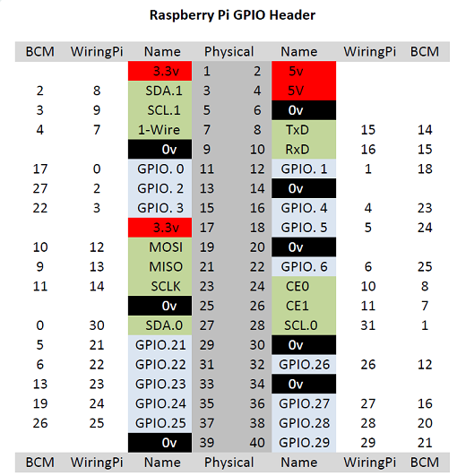

1. GPIO-Pins & Python Grundlagen¶
1.1. GPIO-Pins¶
Bevor wir mit dem Unterricht beginnen, sollten wir etwas über den Raspberry Pi (RPi) wissen: GPIO-Nutzung und die Grundbefehle der Programmiersprache Python3.
Der RPi steuert externe Module und Sensoren über Pins, die GPIO-Pins genannt werden.
GPIO steht für General Purpose Input Output, was bedeutet, dass wir diese Pins für verschiedene Eingabe- und Ausgabebefehle verwenden können.
Um die GPIO-Pins zu verwenden, müssen wir zuerst ihren Modus einstellen.
Es gibt zwei Modi: der erste Modus ist GPIO.BCM, der zweite Modus ist GPIO.BOARD.
Tauchen wir tiefer ein, um zu verstehen, was diese Modi bedeuten und wie sie funktionieren.

Die Option GPIO.BOARD Option gibt an, dass Nummern, die du programmierst den physischen (in der Mitte des Diagramms: Physical) entsprechen.
Die Option GPIO.BCM bedeutet, dass du die Nummern des “Broadcom SOC channel” (BCM) zum Programmieren nimmst (auf beiden Seiten des Diagramms).
Der Einfachheit halber, verwenden wir im Unterricht GPIO.BCM und nicht GPIO.BOARD.
Alle von uns markierten Pins auf der Platine sind funktionale Pins, z.B. haben wir den Buzzer mit GPI01 unter Funktionsmodus (die Spalte mit der Bezeichnung Name) markiert, aber wir müssen den Buzzer mit GPI018 im BCM-Modus programmieren.
1.2. Python¶
Als nächstes werden wir eine kurze Einführung in Python geben. Python ist populäre Programmiersprache, und eine sehr einfache.
In unserem Unterricht werden wir Python3, die neueste Python-Version, verwenden. beginnen wir mit einigen einfachen Anweisungen für den Einstieg in Python.
Das erste Projekt für jeden, der Python lernt, ist "Hello World". Wir können das erreichen, indem wir “Hello World” über unsere Konsole ausgeben, aber wie?
Python hat eine eingebaute Funktion namens "print", mit der wir alles in unserer Konsole ausgeben können. Versuchen wir es mal:
print("Hello World")
Gut gemacht!
Python- Bibliotheken¶
Weiter geht es mit dem Thema Bibliotheken.
Wir importieren die Bibliotheken am Anfang unseres Codes.
Sie enthalten Funktionen, die wir aufrufen können, um bestimmte Befehle auszuführen.
Die gebräuchlichsten Bibliotheken, die wir verwenden, sind time und RPi.GPIO.
import RPIO.GPIO as GPIO
import time
Die RPi.GPIO-Bibliothek erlaubt es uns, Befehle auszuführen, die GPIO INPUT und OUTPUT steuern, wie wir es oben bei der Einführung der GPIO-Pins besprochen haben.
Die Zeitbibliothek ermöglicht es uns, das Programm zu verzögern, damit wir genug Zeit haben, um eine bestimmte Funktion auszuführen.
Wir verwenden dazu die Funktion sleep innerhalb der Zeitbibliothek. Zum Beispiel:
time.sleep(1)
Mit dem Befehl time.sleep(1) wartet unsere Software 1 Sekunde bevor sie weiterarbeitet.
Variablen¶
Kommen wir nun zu den Variablen. Variablen ermöglichen es uns, Daten im Speicher zu halten und Informationen kurzfristig zu speichern, während unser Programm läuft. Wir können unterschiedliche Datentypen speichern: ein Wort, einen Satz, eine Zahl oder sogar eine “Flag”, die angibt, ob etwas wahr oder falsch ist (Boolean).
name "tomala"
In diesem Beispiel habe ich meinen Namen in der Variablen “name” als String gespeichert, wie sieht es mit den Zahlen aus?
raspberrypi_version = 3
Wir haben die ganze Zahl 2 im Variablennamen “raspberrypiversion” gesprichert. Wenn wir die 2 in Anführungszeichen setzen, wie z.B. “2”, ist es ein _String (eine Zeichenkette), kein Integer (keine ganze Zahl)! Wir können auch einen Komma-Wert, auch Float genannt, wie folgt speichern:
raspberrypi_version = 3.2
Der letzte Datentyp heißt Boolean. Wir verwenden es normalerweise, um anzugeben, ob etwas bereits geschehen ist oder nicht. Zum Beispiel:
hatte_fruehstueck = True
hatte_abendessen = False
Hier haben wir angegeben, dass wir gefrühstückt und noch nicht zu Abend gegessen haben.
Gute Arbeit! Bis jetzt haben wir gelernt, wie man Bibliotheken importiert und Daten wie Zahlen, Wörter oder Sätze mit Hilfe von Variablen zu speichert. Wie sieht es mit Bedingungen aus?
Bedingungen¶
Besonders wenn wir mit Booleschen (boolean) Werten arbeiten, wollen wir auch Bedingungen verwenden.
Die erste Bedingung, die wir lernen, ist if: Wenn etwas gilt, dann ue folgendes, sonst etwas anderes tun. Zum Beispiel:
if(raspberrypi_version == 3):
neues_raspberrypi = True
else
neues_raspberrypi = False
Perfekt! Du lernst so schnell!
Schleifen¶
Wenn wir nun über Bedingungen Bescheid wissen, wie sieht es dann mit loops (Schleifen) aus?
Schleifen ermöglichen es uns, etwas zu tun und es entweder für immer oder unter bestimmten Bedingungen zu wiederholen.
In unserer Lektion werden wir zum Beispiel oft die while-Schleife verwenden, lernen wir sie kennen:
number = 0
while True :
number = number + 1
print(number)
time.sleep(1)
In dieser Anweisung definieren wir number als Integer 0.
Dann lassen wir eine while-Schleife für immer laufen (while True, True steht da und ändert sich nie, also wird es eine Endlosschleife).
Dann erhöhen wir die Zahl um 1, geben die Zahl in unserer Konsole aus und warten 1 Sekunde, bevor wir das Ganze noch einmal wiederholen.
Versuchen Sie, diesen Teil des Codes auszuführen, was wird passieren? Wird das Programm jemals aufhören? Wird die Zahl 0 bleiben?
Fazit¶
Gut gemacht! Wiederholen wir kurz, was wir gelernt haben: Wir können Variablen verwenden, um Informationen wie Integer, Strings, Floats und Boolean zu speichern.
Wir können Bibliotheken wie GPIO und time sowie interne Funktionen wie time.sleep() importieren.
Wir können Dinge mit dem Befehl print() ausgeben, der in Python eingebaut ist.
Wir können Schleifen mit while laufen lassen.
Wenn die Anweisung weiterläuft, wird die Schleife weiter ausgeführt, bis wir das Programm beenden.
Wir können auch Bedingungen wie if und else verwenden, um zu prüfen, ob etwas passiert, z. B. eine Variablenänderung, und dann einen darauf basierenden Befehl ausführen.
Nachdem wir nun die Python-Grundlagen gelernt haben, sind wir startklar!
Lasst uns mit unseren Lektionen fortfahren.